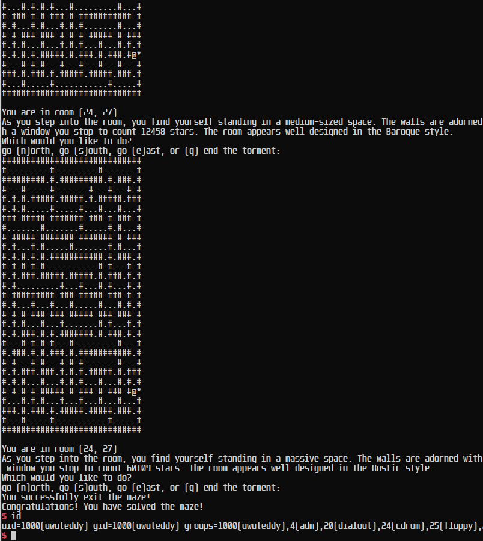

what-a-maze-meant - DEFCON Quals 2023 Writeup
what-a-maze-meant - DEFCON Quals 2023 Writeup

Table of Contents⌗
Overview - a brief summary of the event
Writeup - writeup of the challenge
Conclusion - final closing thoughts
Overview⌗
I played DEFCON Quals 2023 with if this doesn't work we'll get more for next year, a merger team with around 10 teams combined. Despite our best efforts, we placed 15th, just short of the top 12 that qualified, but given that it was our first year, I think we did pretty well, and I guess we’ll need to get more for next year!
In this post is a quick writeup of what-a-maze-meant, the first speedpwn challenge released in the LiveCTF section, where the quickest solves will earn the most points, so speed is key! It was a relatively easy challenge that together with some teamates, I solved pretty quickly. Enjoy!
Challenge overview⌗
We are given a binary, where the goal seems to be to complete the maze, by giving directions such as North, South, East and West. Decompiling online we can dive into the code.
int __cdecl main(int argc, const char **argv, const char **envp)
{
unsigned int v3; // eax
char v5; // [rsp+Bh] [rbp-3A5h] BYREF
int i; // [rsp+Ch] [rbp-3A4h]
int j; // [rsp+10h] [rbp-3A0h]
unsigned int v8; // [rsp+14h] [rbp-39Ch]
unsigned int v9; // [rsp+18h] [rbp-398h]
int v10; // [rsp+1Ch] [rbp-394h]
char v11[904]; // [rsp+20h] [rbp-390h] BYREF
unsigned __int64 v12; // [rsp+3A8h] [rbp-8h]
__int64 savedregs; // [rsp+3B0h] [rbp+0h] BYREF
v12 = __readfsqword(0x28u);
setvbuf(stdin, 0LL, 2, 0LL);
setvbuf(stdout, 0LL, 2, 0LL);
v3 = time(0LL);
srand(v3);
for ( i = 0; i <= 29; ++i )
{
for ( j = 0; j <= 29; ++j )
*((_BYTE *)&savedregs + 30 * i + j - 912) = 35;
}
puts("Reticulating splines... ");
generate_maze((__int64)v11, 1, 1, 1);
puts("\n\nWelcome to the maze!");
v8 = 1;
v9 = 1;
v10 = 1;
while ( 1 )
{
if ( show_maze )
display_maze((__int64)v11, v8, v9);
printf("You are in room (%d, %d)\n", v8, v9);
if ( v10 )
randomDescription();
else
v10 = 1;
puts("Which would you like to do?");
if ( validwalk(*((_BYTE *)&savedregs + 30 * (int)(v8 - 1) + (int)v9 - 912)) )
printf("go (n)orth, ");
if ( validwalk(*((_BYTE *)&savedregs + 30 * (int)(v8 + 1) + (int)v9 - 912)) )
printf("go (s)outh, ");
if ( validwalk(*((_BYTE *)&savedregs + 30 * (int)v8 + (int)(v9 - 1) - 912)) )
printf("go (w)est, ");
if ( validwalk(*((_BYTE *)&savedregs + 30 * (int)v8 + (int)(v9 + 1) - 912)) )
printf("go (e)ast, ");
printf("or (q) end the torment");
printf(": ");
__isoc99_scanf(" %c", &v5);
putchar(10);
switch ( v5 )
{
case 'a':
puts("You cast arcane eye and send your summoned magical eye above the maze.");
show_maze = 1;
v10 = 0;
break;
case 'e':
if ( validwalk(*((_BYTE *)&savedregs + 30 * (int)v8 + (int)(v9 + 1) - 912)) )
++v9;
break;
case 'n':
if ( validwalk(*((_BYTE *)&savedregs + 30 * (int)(v8 - 1) + (int)v9 - 912)) )
--v8;
break;
case 'q':
exit(0);
case 's':
if ( validwalk(*((_BYTE *)&savedregs + 30 * (int)(v8 + 1) + (int)v9 - 912)) )
++v8;
break;
case 'w':
if ( validwalk(*((_BYTE *)&savedregs + 30 * (int)v8 + (int)(v9 - 1) - 912)) )
--v9;
break;
default:
break;
}
if ( *((_BYTE *)&savedregs + 30 * (int)v8 + (int)v9 - 912) == 42 )
{
if ( rand() % 1213 == 1212 )
{
puts("You successfully exit the maze!");
winner();
}
puts("Just as you are about to exit, a displacer beast captures you. You die.");
exit(0);
}
}
}
Running the provided binary and inputting a, we can see the maze layout:
There are already a lot of scripts online to solve mazes, and since we want to solve this as fast as possible for the most points, we use ChatGPT to generate a script for us:
class MazeSolver:
def __init__(self, maze):
self.maze = maze
self.rows = len(maze)
self.cols = len(maze[0])
self.visited = [[False for _ in range(self.cols)] for _ in range(self.rows)]
self.directions = {'N': (-1, 0), 'S': (1, 0), 'W': (0, -1), 'E': (0, 1)}
self.path = []
def solve(self, start_row, start_col):
if self._dfs(start_row, start_col):
return self._get_solution()
else:
return []
def _dfs(self, row, col):
if not self._is_valid(row, col):
return False
self.visited[row][col] = True
self.path.append((row, col))
if self.maze[row][col] == '*':
return True
for direction in self.directions.values():
next_row = row + direction[0]
next_col = col + direction[1]
if self._dfs(next_row, next_col):
return True
self.path.pop()
return False
def _is_valid(self, row, col):
if row < 0 or row >= self.rows or col < 0 or col >= self.cols:
return False
if self.maze[row][col] == '#' or self.visited[row][col]:
return False
return True
def _get_solution(self):
solution = []
for i in range(1, len(self.path)):
prev_row, prev_col = self.path[i-1]
curr_row, curr_col = self.path[i]
if curr_row < prev_row:
solution.append('n')
elif curr_row > prev_row:
solution.append('s')
elif curr_col < prev_col:
solution.append('w')
elif curr_col > prev_col:
solution.append('e')
return solution
maze = [
"#@#.................#.....#.#",
"#.#.#######.#######.#.###.#.#",
"#.#.#.#.....#.....#...#...#.#",
"#.#.#.#.#######.#.#####.###.#",
"#.#...#.#.......#.#...#.....#",
"#.#####.#.#####.###.#.#####.#",
"#.#...#.#.#.....#...#.......#",
"#.#.#.#.#.#######.###########",
"#...#...#.#.......#.......#.#",
"#########.#.#######.#####.#.#",
"#.#.......#...#...#...#...#.#",
"#.#.#.#######.#.#.###.#.###.#",
"#.#.#.....#...#.#.....#.....#",
"#.#.#####.#.###.###########.#",
"#.#.....#.#.#...#.#.......#.#",
"#.#####.#.#.#.###.#.###.###.#",
"#.......#...#...#...#.#...#.#",
"#.###########.#.#.###.###.#.#",
"#.#.......#...#.#.#.....#...#",
"#.#######.#.###.#.#.###.#####",
"#.......#.....#.#...#...#...#",
"#######.#######.#####.#####.#",
"#.....#.....#...#...#.#.....#",
"#.###.#####.#.###.###.#.###.#",
"#.#.#.....#.#.#.......#.#...#",
"#.#.###.###.#.#.#######.#.###",
"#.....#.......#.........#...#",
"####################*########"
]
solver = MazeSolver(maze)
solution = solver.solve(0, 1)
print("Instructions to solve the maze:")
print(solution)
The script outputs the instructions required to solve the maze, starting from @ to the goal *. Writing up a quick script in python we can verify this works:
# MazeSolver() here
...
from pwn import *
import time
elf = context.binary = ELF("./challenge")
p = process()
p.recvuntil(b"Which would you like to do?")
p.sendline(b"a")
p.recvuntil(b"You cast arcane eye and send your summoned magical eye above the maze.")
maze = p.recvuntil(b"You", drop=True).decode().split("\n")
maze = [i for i in maze if "." in i or "#" in i] # scuffed method to get maze
maze = maze[1:]
solver = MazeSolver(maze)
solution = solver.solve(0, 1)
for moves in solution:
p.sendline(moves)
p.interactive()
However, after reaching the goal we seem to just die. Reading the decompiled code further, we see why.
The goal is to call the winner() function, which gives us a shell:
void __noreturn winner()
{
puts("Congratulations! You have solved the maze!");
system("/bin/sh");
exit(0);
}
However, the catch is that apart from solving the maze, we must also pass a random check, and if we don’t, we die. So previously, we were dying because rand() % 1213 was not equal to 1212.
if ( rand() % 1213 == 1212 )
{
puts("You successfully exit the maze!");
winner();
}
puts("Just as you are about to exit, a displacer beast captures you. You die.");
exit(0);
Fortunately, the rand() seed is set to the current time with srand() at the start of the program.
v3 = time(0LL);
srand(v3);
Therefore our method to solve the challenge would be:
- Figure out how to solve the maze (Done)
- Mimic the
rand()function in our script by seeding with the same time - Keep track of the number of
rand()calls - Find a way to call
rand(), and call it additional times until the next call results inrand() % 1213 == 1212
Doing a search in the decompiled code, we see functions rand_range() and randomDescription() each call rand() once when ran.
__int64 __fastcall rand_range(int a1, int a2)
{
...
return (unsigned int)(rand() % (a2 - a1 + 1) + a1);
}
unsigned __int64 randomDescription()
{
...
v2[0] = (__int64)"cozy";
v2[1] = (__int64)"medium-sized";
v2[2] = (__int64)"spacious";
...
v0 = rand();
printf(
"As you step into the room, you find yourself standing in a %s space. The walls are adorned with %s and a two large %"
"s dominate the center of the room. You see %d flowers in a vase, and through a window you stop to count %d stars. Th"
"e room appears well designed in the %s style.\n",
...
return v5 - __readfsqword(0x28u);
}
randomDescription() is called every time we move, even if our move/input is invalid. This means we can call rand() once ourselves by inputting something that’s not a command.
Lets debug with pwndbg to figure out how many times rand() is called when generating the maze.
We start the binary and immediately break with starti, and place a breakpoint after generate_maze():
Then, we set a breakpoint at rand(), and write a simpe python counter to keep track of how many times rand() was called (which was how many times the breakpoint was triggered)
python
counter = 0
def breakpoint_handler(event):
global counter
counter += 1
print(f"srand called. total times called: {counter}")
gdb.events.stop.connect(breakpoint_handler)
end
And we find generate_maze() hits the breakpoint 590 times (the 591 in the bottom of image is when it hits the breakpoint after generate_maze() in main(), so doesn’t count).
Now that we have the amount of times rand() is called, we can simulate this in python to predict what number the next rand() call will yield.
from ctypes import CDLL
libc = CDLL("./libc.so.6")
libc.srand(int(time.time()))
def callrand():
return libc.rand() % 1213
# simulate rand() calls in generate_maze()
for _ in range(590):
callrand()
callrand() # the initial random message it sends
...
for moves in solution:
callrand() # simulate rand() call in the random message we get after every input
p.sendline(moves)
Now, after integrating the random calls into our solve script, we can stop before exiting the maze, keep calling rand() by submitting an invalid input, until the next callrand() we simulate yields 1212. When it does, we can finally exit the maze, and winner() should be called, giving us a shell!
lastmove = solution[-1]
for moves in solution[:-1]: # do all moves except last
callrand() # simulate rand() call in the random message we get after every input
p.sendline(moves)
nextrand = callrand()
while not nextrand == 1212:
p.sendline(b"x") # send invalid input to call rand()
nextrand = callrand()
p.sendline(lastmove)
p.interactive()
Final solve script:
class MazeSolver:
def __init__(self, maze):
self.maze = maze
self.rows = len(maze)
self.cols = len(maze[0])
self.visited = [[False for _ in range(self.cols)] for _ in range(self.rows)]
self.directions = {'N': (-1, 0), 'S': (1, 0), 'W': (0, -1), 'E': (0, 1)}
self.path = []
def solve(self, start_row, start_col):
if self._dfs(start_row, start_col):
return self._get_solution()
else:
return []
def _dfs(self, row, col):
if not self._is_valid(row, col):
return False
self.visited[row][col] = True
self.path.append((row, col))
if self.maze[row][col] == '*':
return True
for direction in self.directions.values():
next_row = row + direction[0]
next_col = col + direction[1]
if self._dfs(next_row, next_col):
return True
self.path.pop()
return False
def _is_valid(self, row, col):
if row < 0 or row >= self.rows or col < 0 or col >= self.cols:
return False
if self.maze[row][col] == '#' or self.visited[row][col]:
return False
return True
def _get_solution(self):
solution = []
for i in range(1, len(self.path)):
prev_row, prev_col = self.path[i-1]
curr_row, curr_col = self.path[i]
if curr_row < prev_row:
solution.append('n')
elif curr_row > prev_row:
solution.append('s')
elif curr_col < prev_col:
solution.append('w')
elif curr_col > prev_col:
solution.append('e')
return solution
from pwn import *
from ctypes import CDLL
import time
libc = CDLL("./libc.so.6")
def callrand():
return libc.rand() % 1213
elf = context.binary = ELF("./challenge")
# seed with the current time right before starting the program
libc.srand(int(time.time()))
p = process()
# simulate rand() calls in generate_maze()
for _ in range(590):
callrand()
callrand() # the initial random message it sends
p.recvuntil(b"Which would you like to do?")
p.sendline(b"a")
p.recvuntil(b"You cast arcane eye and send your summoned magical eye above the maze.")
maze = p.recvuntil(b"You", drop=True).decode().split("\n")
maze = [i for i in maze if "." in i or "#" in i] # scuffed method to get maze
maze = maze[1:]
solver = MazeSolver(maze)
solution = solver.solve(0, 1)
lastmove = solution[-1]
for moves in solution[:-1]: # do all moves except last
callrand() # simulate rand() call in the random message we get after every input
p.sendline(moves)
nextrand = callrand()
while not nextrand == 1212:
p.sendline(b"x") # send invalid input to call rand()
nextrand = callrand()
p.sendline(lastmove)
p.interactive()
Running the final script we indeed get a shell, and solve the challenge!
To recieve our points, we had to submit a .tar file with a Dockerfile and the solve script, which should run ./submitter after getting a shell, and print the flag. However, since I didn’t use any p.recv() after sending the moves, the buffer would crash the docker and the submission would fail. Fortunately, one of my teammates Zafirr submitted with p.sendlineafter() to overcome the issue and we got the points :)
Conclusion⌗
I would like to thank all my teammates for putting in all their effort playing the CTF, and especially Zafirr, KebabTM, Eth007, Ainsetin and Goldenboy (sorry if i missed anyone) for helping me figure things out (especially the rand() calls) while I wrote the solve script to solve this challenge!
It was fun playing with a lot of people, and for the second day I met up with some of my teammates to solve more challenges - you can see toasterpwn’s writeup on them here!
Unfortunately this CTF was right in the middle of my exams so I couldn’t dedicate full time to it, but I hope to play with everyone again and hopefully qualify next year! Thanks for reading!
- teddy / TheSavageTeddy